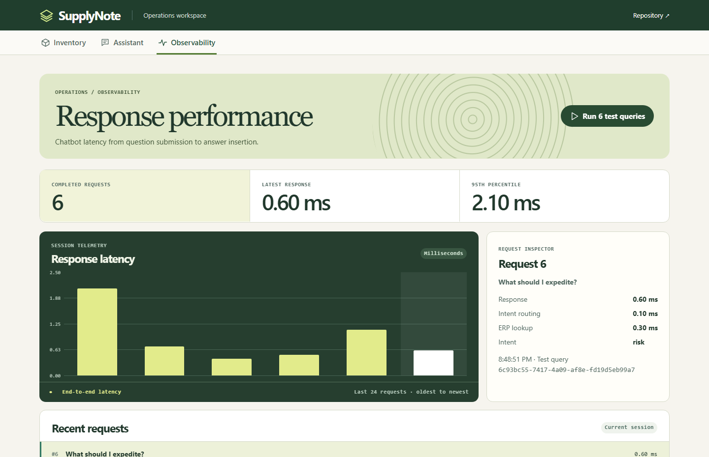

ERP & Conversational AI
SupplyNote
Trace a projected shortage from the warehouse register to the sales and purchase orders behind it.
- Inventory projection
- Start with on-hand units and apply open orders in date order. The register surfaces parts with a projected shortage.
- Grounded answers
- A scikit-learn intent model routes questions to inventory queries. Responses cite the ERP records used to calculate the answer.
- Response traces
- Inspect time spent on intent routing and inventory lookups. The Node.js server exposes Prometheus metrics.

Question to evidence
- Buyer question
- Intent classifier
- ERP projection
- Cited answer